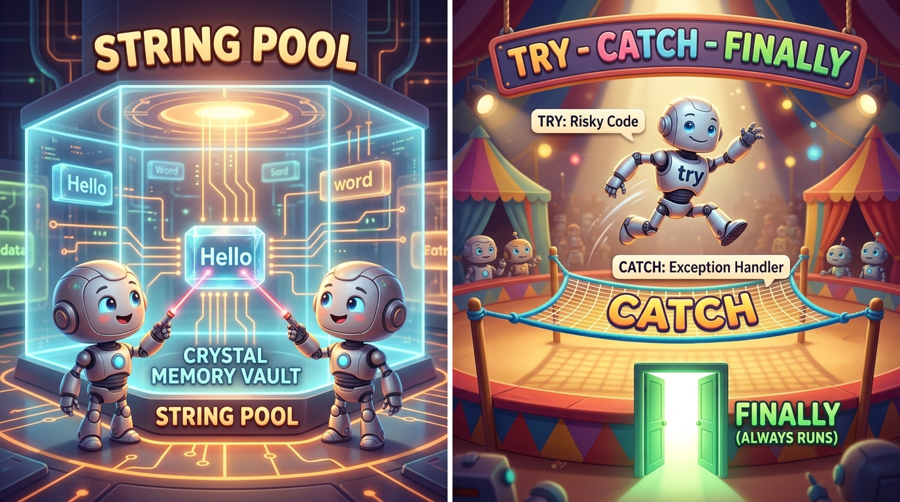

Bridge 7 — Strings, Exceptions & Packages
Congratulations on reaching the final bridge milestone! Today you master the trio of enterprise essentials
that make real-world software crash-proof and maintainable:
the internal mechanics of the String Constant Pool (and why == breaks),
the resilient try-catch-finally safety net for handling unexpected runtime failures,
and Packages for organizing large production codebases.
- Explain String immutability and how the JVM String Constant Pool optimizes Heap memory.
- Articulate the critical difference between reference identity (
==) and value equivalence (.equals()). - Use
StringBuilderto perform efficient string concatenations inside loops without memory thrashing. - Handle runtime failures gracefully using
try,catch, andfinallyblocks. - Distinguish between Checked Exceptions (compile-time checked) and Unchecked Runtime Exceptions.
- Organize classes into reverse-domain packages (
com.aptech...) and import external libraries.
Your Learning Roadmap
1. Java Strings & Immutability
In Java, String is not a primitive — it is a full-featured class.
Crucially, Java Strings are immutable: once a String object is instantiated in memory,
its character sequence can never be modified!
When you call text.toUpperCase() or concatenate with text + " world",
Java does NOT change the original string. It creates a brand-new String object on the Heap and returns its address!
2. The String Pool Vault & Circus Safety Net

"Hello"), their laser pointers aim at
the exact same crystal block — avoiding memory waste!
On the right, Exception Handling is a circus performance: the acrobat performs risky code on the high-wire
(try). If they slip, a resilient, bouncy safety net (catch) prevents a fatal crash,
and the green exit door (finally) is guaranteed to open no matter what happens!
⚠️ 3. The Number One Java Trap: == vs .equals()
This is the most notorious trap in all of Java development:
==compares Memory Addresses (References) — "Are these two variables pointing to the exact same physical memory location?".equals()compares Content (Values) — "Do these two strings contain the exact same letters in the same order?"
String s1 = "Java";
String s2 = "Java"; // Reuses pool instance!
String s3 = new String("Java"); // Forces a new object on heap!
System.out.println(s1 == s2); // true (Both point to same pool block)
System.out.println(s1 == s3); // FALSE! (Different memory addresses!)
System.out.println(s1.equals(s3)); // TRUE! (Exact same letters!)== to compare Strings in Java. Always use s1.equals(s2) or s1.equalsIgnoreCase(s2).
4. When to Use StringBuilder
Because Strings are immutable, concatenating inside a loop is disastrous for performance:
// BAD PRACTICE: Creates 1,000 temporary dead string objects in RAM!
String report = "";
for (int i = 0; i < 1000; i++) {
report += i + ", ";
}
// BEST PRACTICE: Reuses a single mutable internal char buffer!
StringBuilder sb = new StringBuilder();
for (int i = 0; i < 1000; i++) {
sb.append(i).append(", ");
}
String finalReport = sb.toString(); // Fast and memory efficient!5. Exception Handling: The Try-Catch-Finally Net
An Exception is an abnormal event that occurs during program execution (like entering text when a number was expected, or attempting to read a file that was deleted). Without handling, the program instantly terminates with a red stack trace.
public class ExceptionDemo {
public static void main(String[] args) {
try {
int dividend = 100;
int divisor = 0;
int result = dividend / divisor; // Risky code: division by zero!
System.out.println("Result: " + result);
} catch (ArithmeticException ex) {
// Safety Net: Rescues the program!
System.out.println("Emergency Handler: Cannot divide by zero! Defaulting to 0.");
} finally {
// GUARANTEED: Always executes no matter what!
System.out.println("Cleanup completed. System operational.");
}
}
}6. Checked vs. Unchecked Exceptions
| Category | Superclass | When Detected | Examples | Philosophy |
|---|---|---|---|---|
| Checked | java.lang.Exception |
Compile-Time (Compiler forces you to handle with try-catch or declare with throws) |
IOException, SQLException, ClassNotFoundException |
Anticipated real-world failures (missing files, network drops). |
| Unchecked | java.lang.RuntimeException |
Runtime Only (Compiler ignores them) | NullPointerException, ArrayIndexOutOfBoundsException, ArithmeticException |
Bugs in developer logic. Should be prevented with better code checks, not masked with try-catch. |
7. Packages & Namespaces
In large enterprise software, you might have hundreds of classes. A Package is simply a namespace that maps directly to folders on your hard drive.
- Industry convention uses your organization's reversed internet domain name:
package com.aptech.banking;. - To use a class from another package, write an
importstatement:import java.util.ArrayList;. - Classes in
java.lang(likeString,System,Math) are imported automatically by Java for free.
💻 Interactive Simulator: String Pool & Exception Catcher
Test the memory addresses of strings and simulate exception handling below:
⚠️ Top 3 Beginner Traps in Strings & Exceptions
try {
processData();
} catch (Exception e) {
// EMPTY! Nothing written here!
}The Danger: Swallowing exceptions silently makes bugs invisible. When your app malfunctions, there is zero error message in the console. Always print at least e.printStackTrace() or log the failure.
String name = "alice";
name.toUpperCase(); // TRAP: return value was discarded!
System.out.println(name); // Still prints "alice" (lowercase)!The Fix: Reassign the returned string: name = name.toUpperCase();.
📝 Knowledge Check
"hello" == new String("hello") evaluate to false in Java?== operator compares object identity (memory addresses). The literal lives in the String Pool, while new String() allocates a separate Heap object. Use .equals() for character comparison.
finally block in a try-catch-finally statement is guaranteed to execute regardless of whether an exception was thrown. True or False?finally block always executes, making it the ideal location for closing streams, network connections, and database handles.
StringBuilder maintains a resizable mutable internal buffer, eliminating the creation of thousands of intermediate discardable String objects.
🛠 Guided Lab: Robust User Validator
package com.aptech.bridge;.
public class InvalidUserException extends Exception { public InvalidUserException(String m) { super(m); } }.
public static void validateAge(int age) throws InvalidUserException that throws your custom exception if age < 18.
main, wrap calls to validateAge in a try-catch-finally block. Test with both valid (22) and invalid (15) inputs.
finally executes on both tests!
📺 Recommended Further Study
try, catch, finally and throws — the four keywords that stop a crash becoming a lost sale.